Surface Layer (0-200 meters) - Sunlit Zone
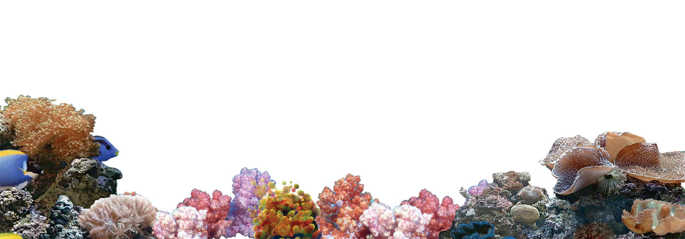
Coral refers to a group of marine invertebrates in the class Anthozoa of the phylum Cnidaria. They typically live in compact colonies of many identical individual polyps. Corals are some of the most important organisms in the marine environment, as they play a critical role in building coral reefs, which are among the most diverse and biologically complex ecosystems on Earth.
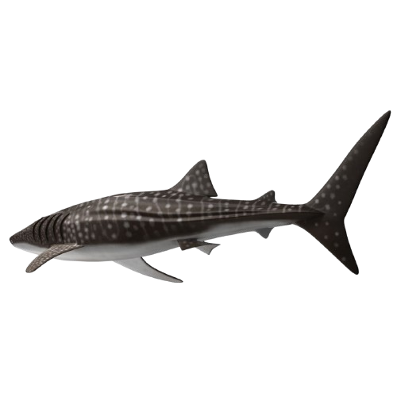
The whale shark is the largest known extant fish species. Despite its massive size, with individuals reaching lengths of up to 18 meters (59 feet) or more, it is known for its gentle nature, posing no significant threat to humans. Whale sharks are easily recognizable by their enormous size, wide, flat heads, and distinctive pattern of white spots and stripes on their dark gray skin.
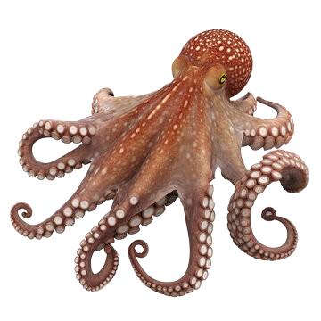
The Giant Pacific Octopus is a remarkable marine creature known for being the largest species of octopus in the world. Their remarkable camouflage ability, along with the capacity to change the texture of their skin, makes them adept at hiding from predators and surprising prey. They possess three hearts and blue blood, adaptations that allow them to thrive in the oxygen-poor waters of the deep sea. When threatened, they can expel a cloud of ink to confuse predators and make a quick escape.
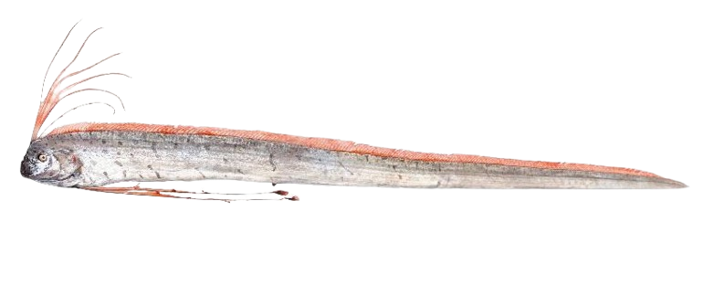
The Giant Oarfish Often referred to as the "king of herrings," is a mysterious and elusive deep-sea fish known for its incredibly elongated body and striking appearance. It is the longest bony fish alive, with reported lengths of up to 11 meters (36 feet), though most sightings are of smaller individuals. The Giant Oarfish resides in the mesopelagic to bathypelagic zones of the ocean, where sunlight begins to fade, making direct observations rare.Characterized by its silvery body, which is laterally compressed and ribbon-like, the Giant Oarfish has a distinctive red crest along its head and a dorsal fin that runs the length of its body, starting from between its eyes. This fin is used to propel the fish by undulating it while keeping the body straight, a mode of locomotion that is quite different from that of most fish. Despite its large size, the Giant Oarfish is considered harmless to humans, feeding primarily on plankton, small crustaceans, and squid.
Upper Mesopelagic Zone (200-400 meters) - Twilight Zone
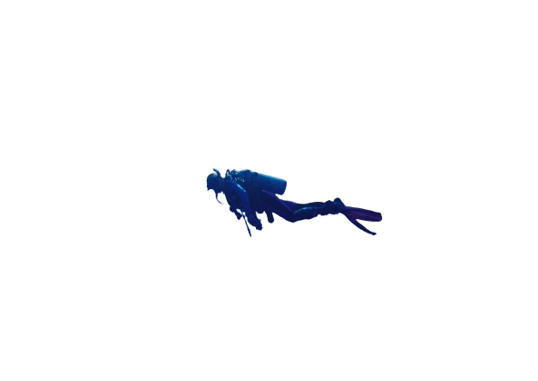
Herbert Nitsch,(born 20 April 1970) is an Austrian freediver who has held world records in all of the eight freediving disciplines recognised by AIDA International. He is the current freediving world record champion and "the deepest man on earth". This title was given to him when he set a world record in the "No Limit" discipline at the depth of 214 meters (702 feet).
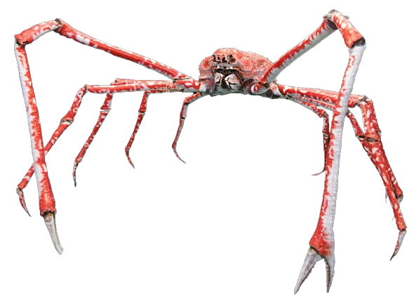
The Japanese spider crab holds the record for the largest leg span of any arthropod, making it a creature of fascination and awe. These marine crabs are primarily found in the waters around Japan, from the Pacific side of the Japanese archipelago to the vents of the Sagami Bay and around the Izu Islands. An adult Japanese spider crab can have a leg span of up to 3.8 meters (12.5 feet) from claw to claw, though the body remains relatively small compared to the vast leg span. The crabs have a rough carapace that can grow up to 40 centimeters (16 inches) wide, and they are adorned with a rugged, orange-brown shell, which helps them blend in with the rocky ocean floor. Their long, spindly legs and the way they can fold them closely against the body contribute to their spider-like appearance, hence the name.
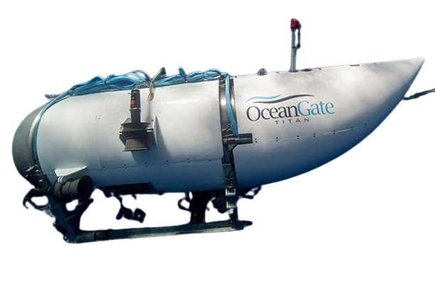
Generally, the activity area of a submarine is 300-500 meters.
Lower Mesopelagic Zone (400-600 meters) - Twilight Zone Continuation
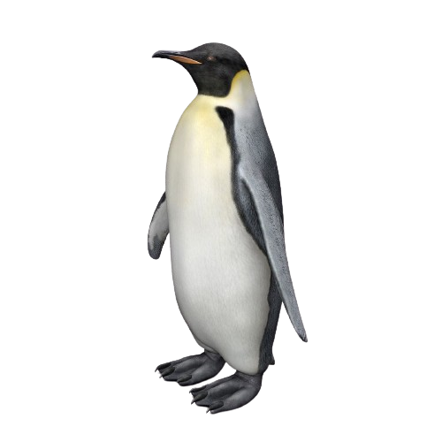
The Emperor Penguin is the tallest and heaviest of all living penguin species and is endemic to Antarctica. Known for their striking black and white plumage and yellow breast patches, Emperor Penguins have evolved unique adaptations to survive the harsh Antarctic environment, including a dense layer of feathers, a thick layer of blubber for insulation, and a highly social behavior pattern that helps them retain warmth. Adult Emperor Penguins can stand about 122 cm (48 in) tall and weigh anywhere from 22 to 45 kg (49 to 99 lbs), with males and females having similar plumage and size, making it difficult to distinguish them based on appearance alone. These birds are exceptionally diverse, with the ability to dive deeper than 500 meters (1,640 feet) and hold their breath for more than 20 minutes as they hunt for fish, krill, and squid.
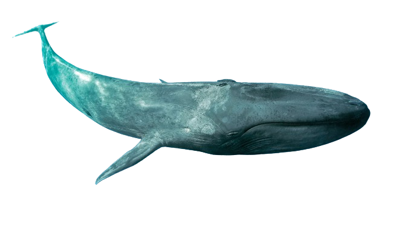
The Blue Whale is the largest animal ever known to have existed on Earth, dwarfing even the largest dinosaurs in terms of sheer mass. These marine mammals can reach lengths of up to 100 feet (30 meters) and weigh as much as 200 tons (approximately 181 metric tonnes). Their heart alone can weigh as much as a car, and their tongue can weigh as much as an elephant, illustrating the immense scale of these creatures. Blue whales communicate with each other using loud, low-pitched moans and whistles. These sounds are among the loudest of any animal, capable of traveling thousands of miles underwater, allowing whales to communicate over vast distances.
Upper Bathypelagic Zone (600-800 meters) - Midnight Zone
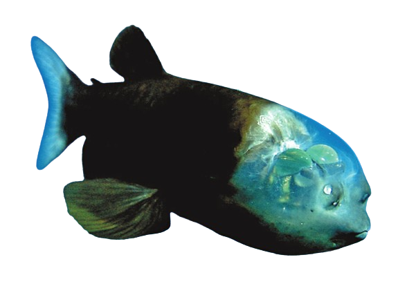
Macropinna microstoma, commonly known as the barreleye fish due to its distinctive barrel-shaped, tubular eyes, is a deep-sea fish that inhabits the dark waters of the Pacific Ocean, from the Bering Sea to Japan and Baja California. This species was first described in 1939, but it wasn't until 2004 that scientists were able to observe a live specimen in its natural environment, revealing fascinating aspects of its behavior and anatomy. One of the most striking features of the barreleye fish is its transparent head, which is filled with fluid. This unique adaptation allows the fish's eyes to pivot within the skull, enabling it to look upwards to spot prey overhead or straight forward when swimming. The eyes themselves are highly specialized for the detection of faint silhouettes of prey against the dim light from above. They are typically oriented upwards but can be directed forwards when the fish is feeding. This peculiar adaptation is thought to help it spot and capture prey in the pitch-black depths of the ocean, where light penetrates only minimally.
Lower Bathypelagic Zone (800-1000 meters) - Midnight Zone Extension
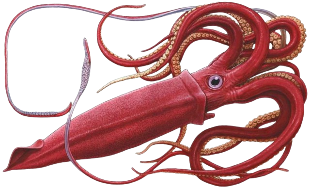
The giant squid is a species of deep-ocean dwelling squid in the family Architeuthidae. It can grow to a tremendous size, offering an example of abyssal gigantism: recent estimates put the maximum size at around 12–13 m (39–43 ft) for females and 10 m (33 ft) for males, from the posterior fins to the tip of the two long tentacles (longer than the colossal squid at an estimated 9–10 m (30–33 ft),but substantially lighter, as the tentacles make up most of the length). The mantle of the giant squid is about 2 m (6 ft 7 in) long (more for females, less for males), and the length of the squid excluding its tentacles (but including head and arms) rarely exceeds 5 m (16 ft).Claims of specimens measuring 20 m (66 ft) or more have not been scientifically documented.The number of different giant squid species has been debated, but genetic research suggests that only one species exists.
Upper Abyssopelagic Zone (1000-2000 meters) - The Abyss
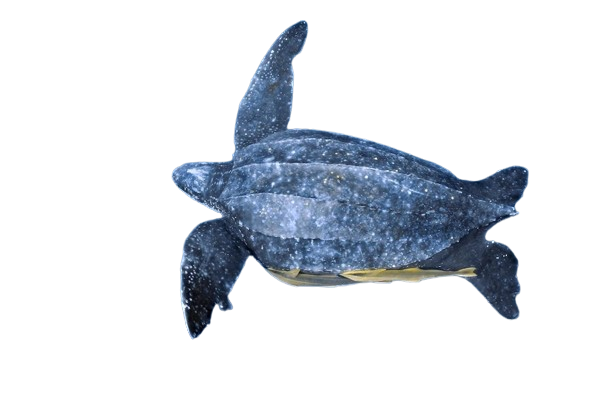
The leatherback sea turtle, sometimes called the lute turtle, leathery turtle or simply the luth, is the largest of all living turtles and the heaviest non-crocodilian reptile, reaching lengths of up to 2.7 metres (8 ft 10 in) and weights of 500 kilograms (1,100 lb). It is the only living species in the genus Dermochelys and family Dermochelyidae. It can easily be differentiated from other modern sea turtles by its lack of a bony shell; instead, its carapace is covered by oily flesh and flexible, leather-like skin, for which it is named. Leatherback turtles have a global range, although there are multiple distinct subpopulations. The species as a whole is considered vulnerable, and some of its subpopulations are critically endangered. The carapace of the leatherback sea turtle has a unique design which enables the sea turtles to withstand high hydrostatic pressures as they dive to depths of 1300 m.
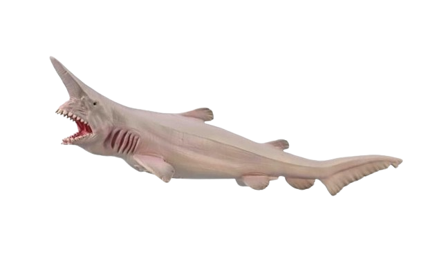
The goblin shark is a rare species of deep-sea shark. Sometimes called a "living fossil", it is the only extant representative of the family Mitsukurinidae, a lineage some 125 million years old. This pink-skinned animal has a distinctive profile with an elongated, flat snout, and highly protrusible jaws containing prominent nail-like teeth. It is usually between 3 and 4 m (10 and 13 ft) long when mature, though it can grow considerably larger such as one captured in 2000 that is thought to have measured 6 m (20 ft). Goblin sharks are benthopelagic creatures that inhabit upper continental slopes, submarine canyons, and seamounts throughout the world at depths greater than 100 m (330 ft), with adults found deeper than juveniles. Some researchers believe that these sharks could also dive to depths of up to 1,300 m (4,270 ft), for short periods of time.
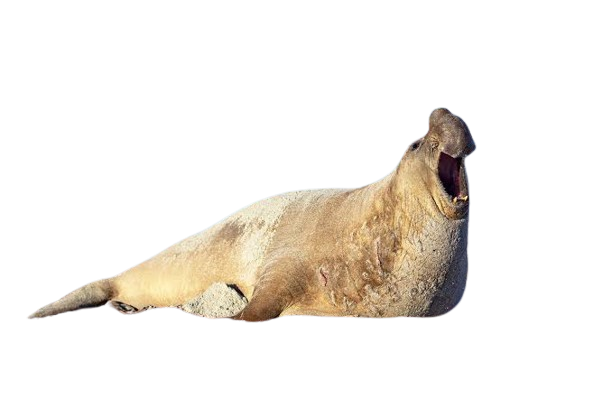
The southern elephant seal is one of two species of elephant seals. It is the largest member of the clade Pinnipedia and the order Carnivora, as well as the largest extant marine mammal that is not a cetacean. It gets its name from its massive size and the large proboscis of the adult male, which is used to produce very loud roars, especially during the breeding season. A bull southern elephant seal is about 40% heavier than a male northern elephant seal , which is nearly twice the weight of a male walrus or 6–7 times heavier than the largest living mostly terrestrial carnivorans, the Kodiak bear and the polar bear. Satellite tracking revealed the seals spend very little time on the surface, usually a few minutes for breathing. They dive repeatedly, each time for more than 20 minutes, to hunt their prey—squid and fish—at depths of 400 to 1,700 m (1,300 to 3,300 ft).
Lower Abyssopelagic Zone (2000-3000 meters) - Deep Abyss
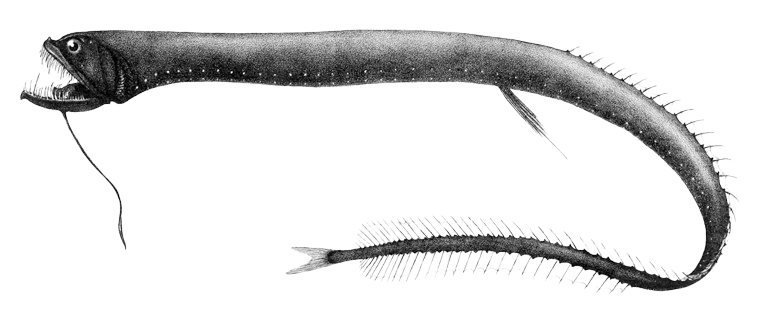
The black dragonfish, is a barbeled dragonfish of the family Stomiidae, found circumglobally in southern subtropical and temperate oceans between latitudes 25°S and 60°S, at depths down to 2,000 metres (6,600 ft). The species is sexually dimorphic: females are black with six stripes; males are brown, and lack the females' canine teeth, pelvic fins and barbel. They can weigh between 13-15 grams. Females are believed to make a vertical migration from deeper than 500 metres (1,600 ft) by day to surface waters at night, whereas males do not migrate, remaining below 1,000 metres (3,300 ft) at all times.
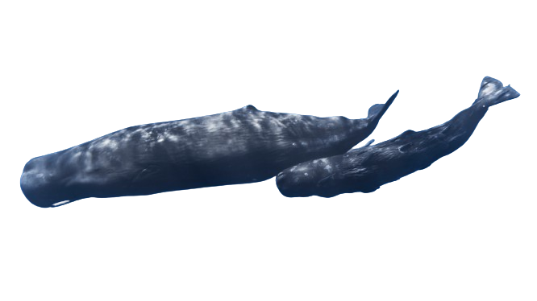
The Sperm whale is a remarkable marine mammal known for its extraordinary size and distinctive physical characteristics. It holds the title of the largest toothed predator on Earth, as well as the largest toothed whale, with adult males reaching lengths of up to 60 feet (about 18 meters) and weights of up to 56 tons (about 51 metric tons). The most striking feature of the sperm whale is its enormous head, which accounts for about one-third of its total body length and contains the spermaceti organ, a large cavity filled with a semi-liquid substance from which the whale derives its name. Sperm whales are deep divers, known for their ability to plunge to depths of over 3,000 meters in search of their primary prey, the giant squid, along with fish and other deep-sea creatures. They can hold their breath for up to 90 minutes, making them one of the deepest diving mammals.
Upper Hadalpelagic Zone (3000-4000 meters) - The Trenches
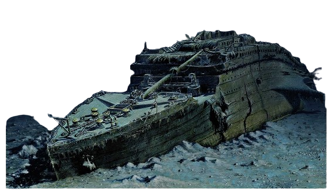
The Titanic was a British ocean liner that sank after colliding with an iceberg in the North Atlantic on April 15, 1912. The wreck was discovered in 1985 about 400 nautical miles (740 kilometers) off the coast of Newfoundland. The wreck lies at a depth of 12,500 feet (3,800 meters). Since its discovery, the Titanic wreck has been a major site for underwater research and exploration, and as of 2012, 140 people have visited the wreck site.
Mid Hadalpelagic Zone (4000-6000 meters) - Deep Trenches
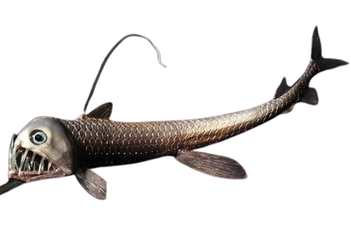
Sloane's viperfish is one of the most iconic and fascinating deep-sea fish species known for its fearsome appearance and remarkable adaptations to the deep ocean's dark, high-pressure environment. One of the most striking features of Sloane's viperfish is its large mouth and sharp, fang-like teeth, which can be so long that they extend beyond the fish's head. These adaptations enable the viperfish to catch prey that swims by, using a "snap-and-swallow" technique. The fish's jaws can open wide, and its stomach can expand to accommodate prey almost as big as the fish itself.
Lower Hadalpelagic Zone (6000 meters and below) - Challenger Deep
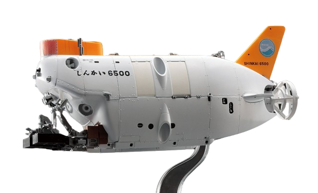
The Japanese "SHINKAI 6500" manned submersible is a deep-sea manned submersible developed and operated by JAMSTEC. It was completed in 1989 and underwent a series of manned diving tests, making it Japan's deepest-diving and most capable manned submersible. The "SHINKAI 6500" has an underwater operation time of up to 8 hours and has dived to a depth of 6,527 meters, setting a record for the deepest dive by a manned submersible. Since entering service in 1991, the "SHINKAI 6500" submersible has conducted research on seabed topography, geology, and marine biology in the Pacific, Atlantic, and Indian Oceans, diving more than 1,300 times.
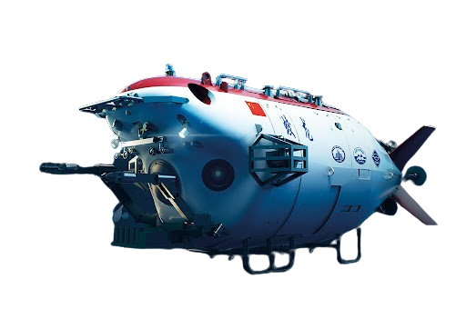
The Jiaolong submersible is a manned submersible designed, developed, and independently integrated by the People's Republic of China, and is a major research project within the 863 Program, with a designed depth of 7,000 meters. From May to July 2010, the Jiaolong conducted several diving missions in the South China Sea, reaching a maximum depth of 3,759 meters. On July 26, 2011, the Jiaolong manned submersible reached a depth of 5,057 meters. On June 27, 2012, it reached a deeper level of 7,062.68 meters.
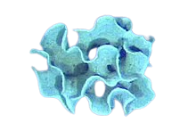
Xenophyophorea is a clade of foraminiferans. Xenophyophores are multinucleate unicellular organisms found on the ocean floor throughout the world's oceans, at depths of 500 to 10,600 metres (1,600 to 34,800 ft).They are a kind of foraminifera that extract minerals from their surroundings and use them to form an exoskeleton known as a test.